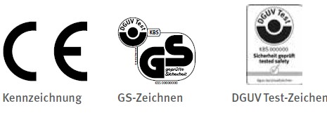
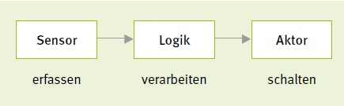

2 Grundlagen für Sicherheit und Gesundheit: Was grundsätzlich gilt
Von der betriebsärztlichen und sicherheitstechnischen Betreuung über die Unterweisung und Gefährdungsbeurteilung bis hin zur Ersten Hilfe: Binden Sie die Sicherheit und Gesundheit Ihrer Beschäftigten systematisch in die betrieblichen Strukturen und Prozesse ein. Damit schaffen Sie eine solide Basis für sichere und gesunde Arbeitsbedingungen.
|
Rechtliche Grundlagen der Branche
|
|
|
|
Weitere Informationen der Branche
|
- DGUV Information 201-031 "Gesundheitsgefährdungen durch Taubenkot"
- DGUV Information 203-079 "Auswahl und Anbringung von Verriegelungseinrichtungen"
- DGUV Information 203-087 "Auswahl und Anbringung von Schlüsseltransfersystemen"
- DGUV Information 213-054 "Maschinen – Sicherheitskonzepte und Schutzeinrichtungen"
- DGUV Information 250-010 "Eignungsuntersuchungen in der betrieblichen Praxis"
- DIN EN 536:2016-01, Straßenbaumaschinen – Mischanlagen für Materialien zum Straßenbau – Sicherheitsanforderungen (EN 536:2015)
- DIN EN ISO 14122-1:2016-10, Sicherheit von Maschinen – Ortsfeste Zugänge zu maschinellen Anlagen – Teil 1: Wahl eines ortsfesten Zugangs und allgemeine Anforderungen (ISO 14122-1:2016)
- "Beschaffung von Arbeitsmitteln" (Empfehlung für Betriebssicherheit, EmpfBS 1113)
- "Anpassung an den Stand der Technik bei der Verwendung von Arbeitsmitteln" (EmpfBS 1114)
- BMAS Interpretationspapier zum Thema "Gesamtheit von Maschinen"
- BMAS Interpretationspapier zum Thema "Wesentliche Veränderung von Maschinen"
- BG RCI "Wesentliche Veränderungen an Maschinen – eine interaktive Arbeitshilfe"
- IFA Report 2/2017 "Funktionale Sicherheit von Maschinensteuerungen – Anwendung der DIN EN ISO 13849"
- BG RCI App "Maschinen-Check"
|
Als Unternehmerin oder Unternehmer sind Sie für die Sicherheit und Gesundheit Ihrer Beschäftigten in Ihrem Unternehmen verantwortlich. Dazu verpflichtet Sie das Arbeitsschutzgesetz. Doch es gibt weitere gute Gründe, warum Ihnen Sicherheit und Gesundheit in Ihrem Unternehmen wichtig sein sollten. So sind Beschäftigte, die in einer sicheren und gesunden Umgebung arbeiten, nicht nur weniger häufig und lange krank, sie arbeiten auch engagierter und motivierter. Mehr noch: Investitionen in Sicherheit und Gesundheit lohnen sich für Unternehmen nachweislich auch ökonomisch.
Die gesetzliche Unfallversicherung unterstützt Sie bei der Einrichtung des Arbeitsschutzes in Ihrem Unternehmen. Der erste Schritt: Setzen Sie die grundsätzlichen Präventionsmaßnahmen um, die auf den folgenden Seiten beschrieben sind. Sie bieten Ihnen die beste Grundlage für einen gut organisierten Arbeitsschutz und stellen die Weichen für weitere wichtige Präventionsmaßnahmen in Ihrem Unternehmen.
 Verantwortung und Aufgabenübertragung
Verantwortung und Aufgabenübertragung
Die Verantwortung für die Sicherheit und Gesundheit Ihrer Beschäftigten liegt bei Ihnen als Unternehmerin oder Unternehmer. Das heißt, Sie müssen die Arbeiten in Ihrem Betrieb so organisieren, dass eine Gefährdung für Leben und Gesundheit vermieden wird und die Belastung Ihrer Beschäftigten nicht über deren individuelle Leistungsfähigkeit hinausgeht.
Diese Aufgabe können Sie auch schriftlich an andere zuverlässige und fachkundige Personen im Unternehmen übertragen. Sie sind jedoch dazu verpflichtet, regelmäßig zu prüfen, ob diese Personen ihre Aufgabe erfüllen. Legen Sie bei Bedarf Verbesserungsmaßnahmen fest. Spätestens nach einem Arbeitsunfall oder nach Auftreten einer Berufskrankheit müssen deren Ursachen ermittelt und die Arbeitsschutzmaßnahmen angepasst werden.
Der Betriebsrat hat im Arbeits- und Gesundheitsschutz ein vollumfängliches Mitbestimmungsrecht, wenn ein Gesetz oder eine Vorschrift einen Sachverhalt nicht abschließend regelt.
 Betriebsärztliche und sicherheitstechnische Betreuung
Betriebsärztliche und sicherheitstechnische Betreuung
Unterstützung bei der Einrichtung von sicheren und gesunden Arbeitsplätzen erhalten Sie von den Fachkräften für Arbeitssicherheit, Betriebsärztinnen und Betriebsärzten sowie Ihrem Unfallversicherungsträger. Die DGUV Vorschrift 2 gibt vor, in welchem Umfang Sie diese betriebsärztliche und sicherheitstechnische Betreuung gewährleisten müssen.
 Sicherheitsbeauftragte
Sicherheitsbeauftragte
Arbeiten in Ihrem Unternehmen mehr als 20 Beschäftigte, müssen Sie zusätzlich Sicherheitsbeauftragte bestellen. Sicherheitsbeauftragte sind Mitarbeiterinnen und Mitarbeiter Ihres Unternehmens, die Sie ehrenamtlich neben ihren eigentlichen Aufgaben bei der Verbesserung der Arbeitssicherheit und des Gesundheitsschutzes unterstützen. Sie achten z. B. darauf, dass Schutzvorrichtungen und -ausrüstungen vorhanden sind und weisen ihre Kolleginnen und Kollegen auf sicherheits- oder gesundheitswidriges Verhalten hin. So geben sie Ihnen verlässliche Anregungen zur Verbesserung des Arbeitsschutzes.
Qualifikation für den Arbeitsschutz
Wirksamer Arbeitsschutz erfordert fundiertes Wissen. Stellen Sie daher sicher, dass alle Personen in Ihrem Unternehmen, die mit Aufgaben zur Gestaltung sicherer und gesunder Arbeitsplätze und Arbeitsverfahren betraut sind, ausreichend qualifiziert sind. Geben Sie diesen Personen die Möglichkeit, an Aus- und-Fortbildungsmaßnahmen teilzunehmen. Die Berufsgenossenschaften, Unfallkassen und die Deutsche Gesetzliche Unfallversicherung bieten hierzu vielfältige Seminare sowie Aus- und Fortbildungsmöglichkeiten an.
 Beurteilung der Arbeitsbedingungen und Dokumentation (Gefährdungsbeurteilung)
Beurteilung der Arbeitsbedingungen und Dokumentation (Gefährdungsbeurteilung)
Wenn die Gefahren für Sicherheit und Gesundheit am Arbeitsplatz nicht bekannt sind, kann sich auch niemand davor schützen. Eine der wichtigsten Aufgaben ist daher die Beurteilung der Arbeitsbedingungen, auch "Gefährdungsbeurteilung" genannt. Diese hat das Ziel, für jeden Arbeitsplatz in Ihrem Unternehmen mögliche Gefährdungen für die Sicherheit und Gesundheit Ihrer Beschäftigten festzustellen und Maßnahmen zur Beseitigung dieser Gefährdungen festzulegen. Beurteilen Sie dabei sowohl die körperlichen als auch die psychischen Belastungen Ihrer Beschäftigten. Beachten Sie Beschäftigungsbeschränkungen und -verbote, z. B. für Jugendliche, Schwangere und stillende Mütter, insbesondere im Hinblick auf schwere körperliche Arbeiten sowie den Umgang mit Gefahr- und Biostoffen. Es gilt: Gefahren müssen immer direkt an der Quelle beseitigt oder vermindert werden. Wo dies nicht vollständig möglich ist, müssen Sie Schutzmaßnahmen nach dem T-O-P-Prinzip ergreifen. Das heißt, Sie müssen zuerst technische (T), dann organisatorische (O) und erst zuletzt personenbezogene (P) Maßnahmen festlegen und durchführen. Mit der anschließenden Dokumentation der Gefährdungsbeurteilung kommen Sie nicht nur Ihrer Nachweispflicht nach, sondern erhalten auch eine Übersicht der Arbeitsschutzmaßnahmen in Ihrem Unternehmen. So lassen sich auch Entwicklungen nachvollziehen und Erfolge aufzeigen.
Verkehrssicherheit
Unfälle im Straßenverkehr führen überdurchschnittlich oft zu schweren und tödlichen Verletzungen. Nutzen Sie Ihre Möglichkeiten, die Sicherheit im Straßenverkehr positiv zu gestalten, egal ob es um tägliche Wege zur Arbeit, Universität, Schule oder Kindertageseinrichtung, um berufliche Fahrten oder um komplexe Transportaufgaben geht. Kinder und Jugendliche bewegen sich sicherer im Straßenverkehr, wenn Sie mit ihnen die notwendigen Verhaltensregeln einüben. Setzen Sie Akzente, z. B. indem Sie Fahrzeuge mit hochwertigen Sicherheitsausstattungen beschaffen, deren Benutzung unterweisen und Gefährdungen unterbinden (z. B. Rückwärtsfahren mit eingeschränkter Sicht). Machen Sie deutlich, dass Sie Fahrlässigkeit wie Sichteinschränkung in Fahrzeugen durch Aufkleber, Spruchbänder oder Gegenstände nicht akzeptieren. Fordern Sie Verantwortlichkeit ein, indem Sie dafür sorgen, dass nach jedem beruflichen Verkehrsunfall ein Auswertungsgespräch geführt wird.
 Arbeitsmedizinische Maßnahmen
Arbeitsmedizinische Maßnahmen
Ein unverzichtbarer Baustein im Arbeitsschutz Ihres Unternehmens ist die arbeitsmedizinische Prävention. Dazu gehören die Beteiligung des Betriebsarztes oder der Betriebsärztin an der Gefährdungsbeurteilung, die Durchführung der allgemeinen arbeitsmedizinischen Beratung sowie die arbeitsmedizinische Vorsorge mit individueller arbeitsmedizinischer Beratung der Beschäftigten. Ergibt die Vorsorge, dass bestimmte Maßnahmen des Arbeits- und Gesundheitsschutzes ergriffen werden müssen, müssen Sie diese für die betroffenen Beschäftigten in die Wege leiten.
 Unterweisung
Unterweisung
Ihre Beschäftigten können nur dann sicher und gesund arbeiten, wenn sie über die Gefährdungen an ihrem Arbeitsplatz sowie ihre Pflichten informiert sind. Stellen Sie sicher, dass Ihre Beschäftigten die erforderlichen Maßnahmen und betrieblichen Regeln kennen und ausreichende Anweisungen erhalten, um Arbeiten sicher ausführen zu können. Hierzu gehören auch die Betriebsanweisungen. Deshalb ist es wichtig, dass Ihre Beschäftigten eine Unterweisung möglichst an ihrem Arbeitsplatz erhalten. Diese kann durch Sie selbst oder eine von Ihnen beauftragte, zuverlässige und fachkundige Person durchgeführt werden. Setzen Sie Beschäftigte aus Zeitarbeitsunternehmen ein, müssen Sie diese so unterweisen wie Ihre eigenen Mitarbeiterinnen und Mitarbeiter. Betriebsärztin bzw. arzt oder die Fachkraft für Arbeitssicherheit können hierbei unterstützen. Die Unterweisung muss mindestens einmal jährlich erfolgen und dokumentiert werden. Bei Jugendlichen ist dies halbjährlich erforderlich. Zusätzlich müssen Sie für Ihre Beschäftigten eine Unterweisung sicherstellen
- vor Aufnahme einer Tätigkeit,
- bei Zuweisung einer anderen Tätigkeit,
- bei Veränderungen im Aufgabenbereich und Veränderungen in den Arbeitsabläufen.
 Gefährliche Arbeiten
Gefährliche Arbeiten
Manche Arbeiten in Ihrem Unternehmen sind besonders gefährlich für Ihre Mitarbeiterinnen und Mitarbeiter. Sorgen Sie in solchen Fällen dafür, dass eine zuverlässige, mit der Arbeit vertraute Person die Aufsicht führt. Ist nur eine Person allein mit einer gefährlichen Arbeit betraut, sind Sie verpflichtet, für geeignete technische oder organisatorische Schutzmaßnahmen zu sorgen, z. B. Kontrollgänge einer zweiten Person, zeitlich abgestimmte Telefon-/Funkmeldesysteme oder Personen-Notsignal-Anlagen. Ihr Unfallversicherungsträger berät Sie dazu gerne.
 Zugang zu Vorschriften und Regeln
Zugang zu Vorschriften und Regeln
Machen Sie die für Ihr Unternehmen relevanten Unfallverhütungsvorschriften sowie die einschlägigen staatlichen Vorschriften und Regeln an geeigneter Stelle für alle zugänglich. So sorgen Sie nicht nur dafür, dass Ihre Beschäftigten über die notwendigen Präventionsmaßnahmen informiert werden, Sie zeigen ihnen auch, dass Sie Arbeitssicherheit und Gesundheitsschutz ernst nehmen. Bei Fragen zum Vorschriften- und Regelwerk hilft Ihnen Ihr Unfallversicherungsträger weiter.
Persönliche Schutzausrüstungen
Wenn durch technische und organisatorische Maßnahmen Gefährdungen für Ihre Beschäftigten nicht ausgeschlossen werden können, sind Sie als Unternehmerin oder Unternehmer verpflichtet, ihnen kostenfrei persönliche Schutzausrüstungen (PSA) zur Verfügung zu stellen. Bei der Beschaffung ist darauf zu achten, dass die PSA mit einer CE-Kennzeichnung versehen ist. Welche PSA dabei für welche Arbeitsbedingungen und Beschäftigten die richtige ist, leitet sich aus der Gefährdungsbeurteilung ab. Vor der Bereitstellung sind Sie verpflichtet, die Beschäftigten anzuhören.
Zur Sicherstellung des Schutzziels ist es wichtig, dass die Beschäftigten die PSA entsprechend der Gebrauchsanleitung und unter Berücksichtigung bestehender Tragezeitbegrenzungen und Gebrauchsdauern bestimmungsgemäß benutzen, regelmäßig auf ihren ordnungsgemäßen Zustand prüfen und Ihnen festgestellte Mängel unverzüglich melden. Die bestimmungsgemäße Benutzung der PSA muss den Beschäftigten im Rahmen von Unterweisungen vermittelt werden. Durch die Organisation von Wartungs-, Reparatur- und Ersatzmaßnahmen sowie durch ordnungsgemäße Lagerung tragen Sie dafür Sorge, dass die persönlichen Schutzausrüstungen während der gesamten Nutzungsdauer gut funktionieren und sich in hygienisch einwandfreiem Zustand befinden.
Werden in Ihrem Unternehmen PSA zum Schutz gegen tödliche Gefahren oder bleibende Gesundheitsschäden eingesetzt (z. B. PSA gegen Absturz, Atemschutz), müssen zusätzliche Maßnahmen beachtet werden. So müssen Unterweisungen zur bestimmungsgemäßen Benutzung dieser PSA praktische Übungen beinhalten. Weitere Maßnahmen können z. B. die Planung und sachgerechte Durchführung von Rettungsmaßnahmen, Überprüfung der Ausrüstungen durch Sachkundige oder die Erstellung von speziellen Betriebsanweisungen betreffen.
Mit Gebotszeichen zur Sicherheits- und Gesundheitsschutzkennzeichnung können Sie die Beschäftigten darauf hinweisen, an welchen Arbeitsplätzen PSA benutzt werden müssen.
Kennzeichnung von sicheren Produkten
Seit 1995 unterliegen alle Maschinen und viele andere Produkte europaweit geltenden Vorschriften zum Inverkehrbringen. Die Einhaltung muss der Hersteller oder Inverkehrbringer beim Verkauf mit einer CE-Kennzeichnung und einer Konformitätserklärung dokumentieren. Darüber hinaus kann der Hersteller oder Inverkehrbringer die Produkte auch durch unabhängige Stellen prüfen lassen. Eine erfolgreiche Prüfung der Sicherheit erkennt man z. B. am GS-Zeichen oder am DGUV Test-Zeichen.

 Für die Branche gilt: Maschinensicherheit Für die Branche gilt: Maschinensicherheit
Auch die in den Anlagen verbauten Aggregate bergen Gefahren für Ihre Mitarbeitenden. Modernste Steuerungstechnik sorgt dafür, dass die automatisierten Abläufe in der Produktion reibungslos funktionieren. Dies bedeutet zugleich, dass viele gefahrbringende Bewegungen entstehen, die durch Schutzsysteme und Schutzeinrichtungen gesichert werden müssen. Automatisierten Anlagen müssen durchgängige Schutzkonzepte zu Grunde liegen, die nicht nur den Normalbetrieb-, sondern ebenso den Wartungs- und Störungsfall berücksichtigen.
Vor und während des Einsatzes dieser Maschinen stellen sich folgende Fragen:
Was ist bei der Verwendung von Maschinen zu beachten?
Sie dürfen nur sichere Maschinen zur Verfügung stellen und verwenden lassen. Daher sind Sie nach der Betriebssicherheitsverordnung dazu verpflichtet, für Maschinen (egal, ob neu oder gebraucht) vor der erstmaligen Verwendung im eigenen Betrieb eine Gefährdungsbeurteilung zu erstellen und die Maschine auf Sicherheit nach dem Stand der Technik in Bezug auf die sichere Verwendung zu überprüfen (z. B. mit der App "Maschinen-Check" der BG RCI). Ergreifen Sie ggf. zusätzliche Maßnahmen, um die sichere Verwendung der Maschine zu gewährleisten, wie z. B. Nachrüstung von Sicherheitstechnik (siehe EmpfBS 1114). Diese Schutzmaßnahmen sind in dieser Branchenregel im Wesentlichen beschrieben. Einen "Bestandsschutz" gibt es nicht.
Überprüfen und aktualisieren Sie regelmäßig die Gefährdungsbeurteilung und berücksichtigen Sie dabei den Stand der Technik in Bezug auf die sichere Verwendung. Besondere Anlässe zur Überprüfung der Gefährdungsbeurteilung sind zudem:
- Bei einer Überprüfung der Wirksamkeit der Schutzmaßnahmen sind Mängel aufgetreten.
- Gegebenheiten haben sich geändert, z. B. Änderungen an der Maschine, der Umgebungsbedingungen oder des Arbeitsverfahrens.
- Neue Erkenntnisse liegen vor, z. B. aus Unfällen, Beinahe-Ereignissen, überarbeitetem Regelwerk.
Was ist bei der Beschaffung neuer Maschinen zu beachten?
Nach der Betriebssicherheitsverordnung dürfen Sie als Unternehmer bzw. Unternehmerin nur Arbeitsmittel zur Verfügung stellen und verwenden lassen, die sicher sind und den geltenden Rechtsvorschriften entsprechen. Für die Beschaffung neuer Maschinen bedeutet das, dass diese nach der europäischen Maschinenrichtlinie gebaut sein und über eine EG-Konformitätserklärung und CE-Kennzeichnung verfügen müssen. Vor der erstmaligen Verwendung der Maschine müssen Sie in einer Gefährdungsbeurteilung das Sicherheitskonzept und die Schutzeinrichtungen systematisch bewerten (z. B. mit der App "Maschinen-Check" der BG RCI) und eine Prüfung der Maschine vornehmen. Um falsche Beschaffungsentscheidungen zu vermeiden, sollten Sie die Gefährdungsbeurteilung in den Beschaffungsprozess integrieren (siehe EmpfBS 1113). So werden beispielsweise für regelmäßig durchzuführende Instandhaltungsarbeiten sichere Verkehrswege und Arbeitsplätze benötigt. Die Zugänge zu hochliegenden Arbeitsplätzen sind nach Möglichkeit als Treppen zu gestalten.
Was ist die Maschinenrichtlinie?
Die Maschinenrichtlinie 2006/42/EG legt für neue Maschinen einen umfassenden Katalog von Anforderungen fest, wie eine Maschine gebaut sein muss, damit sie die Sicherheit und Gesundheit von Personen nicht gefährdet. Sie richtet sich zwar an Hersteller von Maschinen, dennoch ist ein Grundlagenwissen darüber für Sie als Betreiber genauso wichtig. Beispielsweise sollten Sie wissen, unter welchen Umständen Herstellerpflichten auf Sie zukommen können, was eine Maschine von einer unvollständigen Maschine unterscheidet und welche Pflichten ein Hersteller gegenüber Ihnen als Käufer hat. In den folgenden Fragen und deren Beantwortung zur Maschinenrichtlinie erhalten Sie dazu wertvolle Informationen.
Gilt die Maschinenrichtlinie auch für selbst gebaute Maschinen, die nur im eigenen Betrieb verwendet werden?
Ja, wenn Sie Maschinen für den Eigengebrauch herstellen, haben Sie die gleichen Pflichten wie ein externer Hersteller. Das ist z. B. der Fall beim Eigenbau einer Einzelmaschine, beim Zusammenfügen von Einzelmaschinen zu einer Maschinenanlage (Gesamtheit von Maschinen), beim Einbau einer unvollständigen Maschine sowie bei einer wesentlichen Veränderung.
Worauf müssen Sie bei Lieferung einer Maschine achten?
Überprüfen Sie vor der Inbetriebnahme einer neuen Maschine, ob die Herstellerfirma ihren Pflichten nachgekommen ist, Ihnen sowohl eine EG-Konformitätserklärung als auch eine Betriebsanleitung in deutscher Sprache zur Verfügung zu stellen, die auch eine Beschreibung aller sicherheitsrelevanten Tätigkeiten enthält, und ob die CE-Kennzeichnung an der Maschine angebracht ist.
Was ist eine unvollständige Maschine?
Unvollständige Maschinen sind dazu bestimmt, in andere Maschinen eingebaut oder an andere Maschinen angebaut oder zu einer Gesamtheit von Maschinen zusammengefügt zu werden. Sie müssen daher vorher die grundlegenden Sicherheits- und Gesundheitsschutzanforderungen der Maschinenrichtlinie nur teilweise erfüllen. Unvollständige Maschinen dürfen Sie nicht in Betrieb nehmen, wenn diese nicht durch den Einbau Teil einer Maschine geworden sind, für die die Herstellerpflichten nach Maschinenrichtlinie erfüllt wurden (unter anderem vollständige Einhaltung der Sicherheits- und Gesundheitsschutzanforderungen, EG-Konformitätserklärung, CE-Kennzeichnung). Für unvollständige Maschinen muss vom Hersteller eine Einbauerklärung und Montageanleitung vorliegen.
Was ist eine Gesamtheit von Maschinen?
Häufig werden Maschinen und/oder unvollständige Maschinen zu einer Maschinenanlage zusammengefügt. Die Maschinenrichtlinie bezeichnet dieses als Gesamtheit von Maschinen, wenn sowohl ein produktionstechnischer Zusammenhang als auch ein sicherheitstechnischer Zusammenhang zwischen den Maschinen besteht. Für eine Gesamtheit von Maschinen müssen die gleichen Herstellerpflichten nach Maschinenrichtlinie übernommen werden wie für eine Einzelmaschine. Als Hersteller der Gesamtheit von Maschinen gilt, wer diese zusammenfügt. Dabei ist unerheblich, dass einzelne Maschinen oder unvollständige Maschinen der Gesamtheit von Maschinen von verschiedenen Herstellern zugeliefert werden können. Sofern Sie also nicht zusätzliche Herstellerpflichten übernehmen möchten, sollten Sie einen Generalunternehmer beauftragen und vertraglich vereinbaren, dass dieser als Hersteller der Gesamtheit von Maschinen gilt. Das ist umso wichtiger, wenn verschiedene Zulieferer am Projekt beteiligt sind oder Sie sogar selbst vorhaben, bestimmte Teile der Maschinenanlage zuzuliefern.
Was ist eine wesentliche Veränderung?
Wenn Sie eine Veränderung an einer Maschine vornehmen (zum Beispiel Leistungsänderung, Funktionsänderung, Sicherheitstechnik, Austausch von Anlagenteilen), müssen Sie nach § 10 Absatz 5 der Betriebssicherheitsverordnung beurteilen, ob diese Änderung wesentlich ist und Ihr Ergebnis dokumentieren. Denn eine Maschine, die gegenüber ihrem ursprünglichen Zustand wesentlich verändert wird, wird als neue Maschine angesehen. Wenn Sie also eine wesentliche Veränderung an einer Maschine vornehmen, werden Sie somit zum Hersteller der Maschine und müssen die Herstellerpflichten nach Maschinenrichtlinie übernehmen. Als Folge daraus müssen Sie als neuer Hersteller die Maschine unabhängig von ihrem ursprünglichen Baujahr auf das Sicherheitsniveau der aktuellen Maschinenrichtlinie nachrüsten. Der Austausch von Bauteilen der Maschine durch identische Bauteile oder Bauteile mit identischer Funktion und identischem Sicherheitsniveau sowie der Einbau von Schutzeinrichtungen, die zu einer Erhöhung des Sicherheitsniveaus der Maschine führen und die darüber hinaus keine zusätzlichen Funktionen ermöglichen, werden nicht als wesentliche Veränderung angesehen.
Zur Bewertung und Dokumentation von Veränderungen an Maschinen bietet die BG RCI eine Arbeitshilfe in Form einer interaktiven PDF-Datei (s. "Weitere Informationen").
Was ist eine Sicherheitsfunktion und was ist ein Performance Level (PL)?
Bei vielen Schutzeinrichtungen an Maschinen spielt die Maschinensteuerung eine wichtige Rolle. Eine Sicherheitsfunktion beschreibt dabei, wie und unter welchen Bedingungen eine Steuerungsfunktion der Maschine für Sicherheit sorgt. Ein Beispiel verdeutlicht, was gemeint ist:
Automatikbetrieb: Das Öffnen einer Schutztür führt zum Stillsetzen aller Maschinenbewegungen.
Die Sicherheit der Bedienerpersonen hängt dabei von der Zuverlässigkeit der Maschinensteuerung ab. Der Ausfall der Sicherheitsfunktion kann gefährliche Folgen haben. Die gesamte Steuerungskette einer Sicherheitsfunktion ist daher so auszulegen, dass sie zuverlässig genug für den vorgesehenen Einsatzzweck ist. Die Steuerungskette kann dabei aus Bauteilen bestehen, die unterschiedlichen Technologien (zum Beispiel elektrisch/elektronisch, pneumatisch, hydraulisch) angehören. Sie beginnt an dem Punkt, an dem sicherheitsbezogene Signale erzeugt werden (zum Beispiel Positionsschalter an der Schutztür) und endet in der Regel an den Ausgängen der Leistungssteuerungselemente (zum Beispiel Hauptkontakte eines Schützes oder Ausgang eines Magnetventils).

Abb. 1 Steuerungskette einer Sicherheitsfunktion
(Bildnachweis IFA Report 2/2017, S. 30)
Grundlage für die Auslegung und Bewertung von Sicherheitsfunktionen ist die Normenreihe DIN EN ISO 13849. Sie teilt das Sicherheitsniveau von Sicherheitsfunktionen in fünf Stufen von a bis e ein, die sich Performance Level (PL) nennen.
Was muss ich als Betreiber einer Maschine über Sicherheitsfunktionen wissen?
Als Betreiber sollten Sie grundsätzlich verstehen, was eine Sicherheitsfunktion ist (siehe "Was ist eine Sicherheitsfunktion?"). Denn sowohl Änderungen an Sicherheitsfunktionen als auch deren Entwurf und Realisierung erfordern eine entsprechende Qualifikation und Erfahrung, die nur durch regelmäßige theoretische und praktische Anwendung zu erlangen ist. Sofern Sie darüber nachdenken, selbst Sicherheitsfunktionen zu ändern oder zu realisieren, sollten Sie unbedingt prüfen, ob Sie die notwendige Qualifikation und Erfahrung dafür besitzen (TRBS 1115 "Sicherheitsrelevante Steuer- und Regeleinrichtungen"). Suchen Sie sich gegebenenfalls Hilfe bei entsprechenden Fachleuten oder beauftragen Sie eine Fachfirma.
Was sind Verriegelungseinrichtungen, Zuhaltungen und Schlüsseltransfersysteme?
Bewegliche Abdeckungen, Türen oder Klappen (bewegliche trennende Schutzeinrichtungen) müssen dort vorgesehen werden, wo ein Eingriff in den Prozess zu Bedien- oder Servicezwecken häufig (> 1-mal pro Woche) notwendig ist. Es muss jedoch sichergestellt sein, dass die gefahrbringenden Maschinenfunktionen verhindert werden, solange die Schutzeinrichtung nicht geschlossen ist (Schutz vor unerwartetem Anlauf). Beim Öffnen der Schutzeinrichtung müssen Gefahr bringende Maschinenfunktionen stillgesetzt bzw. abgeschaltet werden. Um dies zu erreichen, ist eine Stellungsüberwachung der Schutzeinrichtung erforderlich. Diese Stellungsüberwachung erfolgt beispielsweise durch elektromechanische Positionsschalter (Bauart 1 oder 2) oder Näherungsschalter (Bauart 3 oder 4), die mit weiteren sicherheitsrelevanten Teilen der Steuerung zu einer Verriegelungseinrichtung verknüpft sind (siehe "Was ist eine Sicherheitsfunktion?" und DGUV Information 203-079). Wo es besonders auf Robustheit (z. B. Wasser- und Staubfestigkeit) oder Manipulationssicherheit ankommt, sollten kodierte Näherungsschalter der Bauart 4 zum Einsatz kommen.
Muss die bewegliche trennende Schutzeinrichtung so lange zugehalten bleiben, bis das Risiko durch die gefährdenden Maschinenfunktionen nicht mehr besteht (z. B. bei langem Nachlauf), ist zusätzlich eine Zuhaltung erforderlich (Beispiel: Eine Tür wird durch einen gesteuerten Bolzen zugehalten). Ein Stillstandswächter oder ein Zeitglied erzeugt in dieser Sicherheitsfunktion das erforderliche Signal, um die Zuhaltung zu entsperren.
Verriegelungseinrichtungen oder Zuhaltungen können auch durch sogenannte Schlüsseltransfersysteme realisiert werden. Hierbei wird die Sicherheitsfunktion durch zwangsläufigen Transfer von Schlüsseln zwischen den Komponenten und ein zwangsläufiges Sperren einzelner Komponenten umgesetzt (siehe DGUV Information 203-087).
Wie müssen Wartungsöffnungen für seltenen Zugang gesichert werden?
Wartungsöffnungen für seltenen Zugang müssen mit feststehenden trennenden Schutzeinrichtungen gesichert sein. Diese dürfen nur mit Werkzeug zu öffnen sein und dürfen im geöffneten Zustand nicht in der Schutzstellung verbleiben.
Klappen für reine Kontrolltätigkeiten müssen mit einem fest angebrachten Eingreifschutz versehen oder mit einer elektrischen Verriegelung ausgestattet sein.
|
 Brandschutz- und Notfallmaßnahmen
Brandschutz- und Notfallmaßnahmen
Im Notfall müssen Sie und Ihre Beschäftigten schnell und zielgerichtet handeln können. Daher gehören die Organisation des betrieblichen Brandschutzes, aber auch die Vorbereitung auf sonstige Notfallmaßnahmen, wie z. B. die geordnete Evakuierung Ihrer Arbeitsstätte, zum betrieblichen Arbeitsschutz. Lassen Sie daher so viele Beschäftigte wie möglich zu Brandschutzhelferinnen und Brandschutzhelfern ausbilden, empfehlenswert sind mindestens fünf Prozent der Belegschaft. Empfehlenswert ist auch die Bestellung einer Mitarbeiterin oder eines Mitarbeiters zum Brandschutzbeauftragten. Das zahlt sich im Notfall aus. Damit Entstehungsbrände wirksam bekämpft werden können, müssen Sie Ihren Betrieb mit geeigneten Feuerlöscheinrichtungen, wie z. B. tragbaren Feuerlöschern ausstatten und alle Mitarbeiterinnen und Mitarbeiter mit deren Benutzung durch regelmäßige Unterweisungen vertraut machen.
 Erste Hilfe
Erste Hilfe
Die Organisation der Ersten Hilfe in Ihrem Betrieb gehört zu Ihren Grundpflichten. Unter Erste Hilfe versteht man alle Maßnahmen, die bei Unfällen, akuten Erkrankungen, Vergiftungen und sonstigen Notfällen bis zum Eintreffen des Rettungsdienstes, eines Arztes oder einer Ärztin erforderlich sind. Dazu gehört z. B.: Unfallstelle absichern, Verunglückte aus akuter Gefahr retten, Notruf veranlassen, lebensrettende Sofortmaßnahmen durchführen sowie Betroffene betreuen. Den Grundbedarf an Erste-Hilfe-Material decken der "Kleine Betriebsverbandkasten" nach DIN 13157 bzw. der "Große Betriebsverbandkasten" nach DIN 13169 ab. Zusätzlich können ergänzende Materialien aufgrund betriebsspezifischer Gefährdungen erforderlich sein.
Je nachdem wie viele Beschäftigte in Ihrem Unternehmen arbeiten, müssen Ersthelferinnen und Ersthelfer in ausreichender Anzahl zur Verfügung stehen. Diese Aufgabe können alle Beschäftigten übernehmen. Voraussetzung ist die erfolgreiche Teilnahme an einer Erste-Hilfe-Ausbildung und die regelmäßige Auffrischung alle zwei Jahre (Erste-Hilfe-Fortbildung). Die Lehrgangsgebühren werden von den Berufsgenossenschaften und Unfallkassen getragen. Beachten Sie, dass auch im Schichtbetrieb und während der Urlaubszeit genügend Ersthelferinnen und -helfer anwesend sein müssen.
|
Wie viele Ersthelferinnen und Ersthelfer?
|
| Bei 2 bis zu 20 anwesenden Versicherten |
eine Ersthelferin bzw. ein Ersthelfer |
| Bei mehr als 20 anwesenden Versicherten |
|
| a) in Verwaltungs- und Handelsbetrieben |
5 % |
| b) in sonstige Betrieben |
10 % |
 Betriebssanitäter in Großbetrieben bzw. auf Baustellen
Betriebssanitäter in Großbetrieben bzw. auf Baustellen
Der Betriebssanitäter oder die Betriebssanitäterin sollen erweiterte Erste Hilfe leisten und dadurch zu einer lückenlosen Versorgung von verletzten oder erkrankten Personen beitragen.
Sind im Betrieb gewöhnlich mehr als 1500 Beschäftigte oder auf Baustellen gewöhnlich mehr als 100 Beschäftigte anwesend, muss sich mindestens ein Betriebssanitäter oder eine Betriebssanitäterin einsatzbereit unter ihnen befinden. Behalten Sie Schichtdienst, Urlaubs- und mögliche Krankheitszeiten im Blick, wenn Sie die Anzahl der erforderlichen Betriebssanitäter und Betriebssanitäterinnen erheben.
 Arbeitsschutzausschuss
Arbeitsschutzausschuss
Arbeiten in Ihrem Unternehmen mehr als 20 Beschäftigte, sind Sie verpflichtet, einen Arbeitsschutzausschuss (ASA) in ihrem Betrieb zu bilden. Dieser dient dem Austausch und der Zusammenarbeit aller an der Gestaltung von Sicherheit und Gesundheit im Betrieb beteiligten Stellen.
Der Kreis der Teilnehmenden ist gesetzlich vorgegeben und umfasst:
- Unternehmer/-in und/oder eine von ihm bzw. ihr beauftragte Person,
- zwei Mitglieder des Betriebs- oder Personalrats,
- Fachkraft für Arbeitssicherheit,
- Betriebsärztin oder Betriebsarzt,
- Sicherheitsbeauftragte in angemessener Zahl.
- Selbstverständlich kann dieser Kreis bei Bedarf durch weitere Entscheidungsträger und -trägerinnen sowie inner- oder außerbetriebliche Spezialistinnen und Spezialisten erweitert werden.
Der Arbeitsschutzausschuss trifft sich mindestens zu vier Sitzungen im Jahr und erörtert Strategien, Neuerungen, Ereignisse oder auch Einzelfragen zum Thema Sicherheit und Gesundheit bei der Arbeit. Dazu gehören z. B. die Analyse des Unfallgeschehens, die Auswertung von Gefährdungsbeurteilungen und die Koordinierung von Maßnahmen zur Verbesserung von Sicherheit und Gesundheit im Betrieb. Auch betriebliche Veränderungen, wie der Einsatz neuartiger persönlicher Schutzausrüstungen sowie die Einführung neuer Arbeitsverfahren, Arbeitsmittel oder Stoffe können Themen im Arbeitsschutzausschuss sein.
Regelmäßige Prüfung der Arbeitsmittel
Schäden an Arbeitsmitteln können zu Unfällen führen. Daher müssen die in Ihrem Unternehmen eingesetzten Arbeitsmittel regelmäßig kontrolliert und je nach Arbeitsmittel geprüft werden. Vor der Verwendung eines Arbeitsmittels muss dieses durch Inaugenscheinnahme, ggf. durch eine Funktionskontrolle, auf offensichtliche Mängel kontrolliert werden, die so schnell entdeckt werden können. Neben diesen Kontrollen müssen Sie für wiederkehrende Prüfungen in angemessenen Zeitabständen sorgen. Wie, von wem und in welchen Abständen dies geschehen soll, beschreiben die TRBS 1201 und die TRBS 1203 (siehe Infobox "Rechtliche Grundlagen"). Im Einschichtbetrieb hat sich bei vielen Arbeitsmitteln ein Prüfabstand von einem Jahr bewährt. Die Ergebnisse der Prüfungen müssen Sie mindestens bis zur nächsten Prüfung aufbewahren.
 Planung und Beschaffung
Planung und Beschaffung
Es lohnt sich, das Thema Sicherheit und Gesundheit von Anfang an in allen betrieblichen Prozessen zu berücksichtigen. Wenn Sie schon bei der Planung von Arbeitsstätten und Anlagen sowie dem Einkauf von Arbeitsmitteln und Arbeitsstoffen an die Sicherheit und Gesundheit Ihrer Beschäftigten denken, erspart Ihnen dies (teure) Nachbesserungen.
 Barrierefreiheit
Barrierefreiheit
Denken Sie auch an die barrierefreie Gestaltung der Arbeitsräume in Ihrem Unternehmen. Barrierefreiheit kommt nicht nur Ihren Mitarbeiterinnen und Mitarbeitern mit Behinderung zugute, Ihre gesamte Belegschaft kann davon profitieren. So können z. B. ausreichend breite Wege oder Armaturen, Lichtschalter und Türgriffe, die gut erreichbar sind, sowie trittsichere Bodenbeläge Unfallrisiken senken und zu weitaus geringeren Fehlbelastungen und Beanspruchungen führen.
Gesundheit im Betrieb
Gesundheit ist die wichtigste Voraussetzung, damit Ihre Mitarbeiterinnen und Mitarbeiter bis zum Rentenalter beschäftigungs- und leistungsfähig bleiben. Frühzeitige Maßnahmen, die arbeitsbedingte physische und psychische Fehlbelastungen vermeiden helfen, zahlen sich doppelt aus – sowohl für die Beschäftigten als auch den Betrieb. Dazu gehören die Gestaltung sicherer und gesunder Arbeitsplätze und ein Betriebliches Eingliederungsmanagement (BEM). Auch die Stärkung eines gesundheitsbewussten Verhaltens Ihrer Beschäftigten und die Schaffung gesundheitsförderlicher Arbeitsbedingungen tragen zur Gesundheit Ihrer Beschäftigten bei. Ein Tipp: Ihre Mitarbeiterinnen und Mitarbeiter wissen oft am besten, was sie an ihrem Arbeitsplatz beeinträchtigt. Beziehen Sie sie daher in Ihre Überlegungen für Verbesserungsmaßnahmen mit ein. Das sorgt auch für motivierte Beschäftigte.
Für die Branche gilt: Gesundheitsgefahren durch Lärm, Staub und biogene Gefahrstoffe
Die Herstellung von Asphaltmischgut erfordert den Umgang mit großen Mengen an Schüttgut. Durch den Betrieb der hierzu eingesetzten Fahrzeuge, Erdbaumaschinen und Stetigförderer werden Staubpartikel und Lärm freigesetzt. Diese können die Gesundheit Ihrer Beschäftigten gefährden. Sie müssen diesen Gefährdungen mit geeigneten Maßnahmen begegnen.
Ihre Grundpflichten zur Lärmbekämpfung sind in der Lärm- und Vibrations-Arbeitsschutzverordnung beschrieben. Lassen Sie sich hierzu von Fachleuten beraten. Oft lassen sich schon durch einfache Maßnahmen erhebliche Verbesserungen erzielen.
- Der Einsatz lärmgedämmter Arbeitsmaschinen kann die Schallemissionen deutlich verringern.
- Schüttgeräusche sind ebenfalls häufig Ursache der Lärmentstehung. Durch die Anbringung von Lärmschutzmatten an den Blechen der Materialrutschen können diese deutlich verringert werden.
Dies sind Beispiele für Ihre Möglichkeiten dem Lärm auf einfache Weise zu begegnen.
Eine weitere Gesundheitsgefährdung bei der Herstellung von Asphaltmischgut resultiert aus dem unvermeidbaren Umgang mit staubenden und staubförmigen Ausgangsstoffen. Oftmals enthalten die Gesteinskörnungen Quarzanteile, die die Atmungsorgane in Form von Quarzfeinstaub in besonderem Maße gefährden.
Setzen Sie nach Möglichkeit geschlossene, dichte Systeme ein, um die Ausbreitung von Staub zu verhindern. Zur Beseitigung von angefallenem Staub setzen Sie vorzugsweise zentrale Staubsauganlagen ein. Bei der Reinigung der Hofflächen haben sich Kehrfahrzeuge mit Bedüsung bewährt. Trockenkehren mit dem Besen ist tabu. Nähere Informationen zur Vermeidung und Beseitigung von Quarzfeinstaub finden Sie in der TRGS 559.
Vor Aufnahme von Tätigkeiten sind Informationen vom Lieferanten darüber einzuholen, ob im angelieferten Material (Gesteinskörnungen oder Ausbauasphalt) Asbest nachgewiesen wurde. In diesem Fall sind die Schutzmaßnahmen nach TRGS 517 einzuhalten.
Gesundheitlich bedenklich ist auch der Kot, den die in den Mischanlagen nistenden Tauben abgeben sowie deren Kadaver. Hinweise zum Umgang mit diesen Gefährdungen finden Sie in der DGUV Information 201-031 "Gesundheitsgefährdungen durch Taubenkot".
|
 Fremdfirmen, Lieferanten und Einsatz auf fremdem Betriebsgelände
Fremdfirmen, Lieferanten und Einsatz auf fremdem Betriebsgelände
Auf Ihrem Betriebsgelände halten sich Fremdfirmen und Lieferanten auf? Hier können ebenfalls besondere Gefährdungen entstehen. Treffen Sie die erforderlichen Regelungen und sorgen Sie dafür, dass diese Personen die betrieblichen Arbeitsschutzregelungen Ihres Unternehmens kennen und beachten.
Arbeiten Sie bzw. Ihre Beschäftigten auf fremdem Betriebsgelände, gilt dies umgekehrt auch für Sie: Sorgen Sie auch in Sachen Arbeitssicherheit für eine ausreichende Abstimmung mit dem Unternehmen, auf dessen Betriebsgelände Sie im Einsatz sind.
Integration von zeitlich befristeten Beschäftigten
Die Arbeitsschutzanforderungen in Ihrem Unternehmen gelten für alle Beschäftigten – auch für Mitarbeiterinnen und Mitarbeiter, die nur zeitweise in Ihrem Betrieb arbeiten, wie z. B. Zeitarbeitnehmerinnen und -arbeitnehmer sowie Praktikantinnen und Praktikanten. Stellen Sie sicher, dass diese Personen ebenfalls in den betrieblichen Arbeitsschutz eingebunden sind.